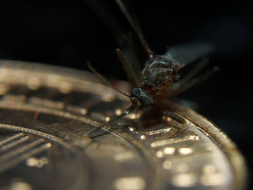

01-04-2014 4:22PM (ET)

I read Eyal and Sirer 'Majority is not Enough: Bitcoin Mining is Vulnerable' analyzing Selfish Mining on the day it was published. Since then I've been working on solutions to selfish mining. Today I'm posting a draft of my work in which I propose a novel solution using unforgeable timestamps and random beacons. I improve on the current best result increasing the minimum size of mining pool which can selfishly mine from 25% to 32%.
You can read the paper here: One Weird Trick to Stop Selfish Miners: Fresh Bitcoins, A Solution for the Honest Miner.
For an gentle introduction read to Selfish Mining read 'Bitcoin is Broken' or 'The best way to take control of Bitcoin? Rally other greedy “selfish miners”' .
tl;dr A Bitcoin mining pool which is big enough can behave selfishly and win more than their fair share of mining rewards. This is bad and could result in a Tragedy of the Commons as selfishness would become incentivized.
A recent result in Bitcoin is the selfish mining strategy in which a selfish cartel withholds blocks they mine to gain an advantage. This strategy is both incentive-compatible and harmful to Bitcoin. In this paper we introduce a new defense against selfish mining that improves on the previous best result, we raise the threshold of mining power necessary to profitably selfishly mine from 25% to 32% under all propagation advantages. While the security of our system uses unforgeable timestamps, it is robust to their compromise. Additionally, we discuss the difficulty a mining conspiracy would face attempting to keep the compromise of our scheme secret and we analyze incentives for getting miners to adopt these changes.
Suggestions welcome on twitter: @Ethan_Heilman or email Ethan.R.Heilman@gmail.com